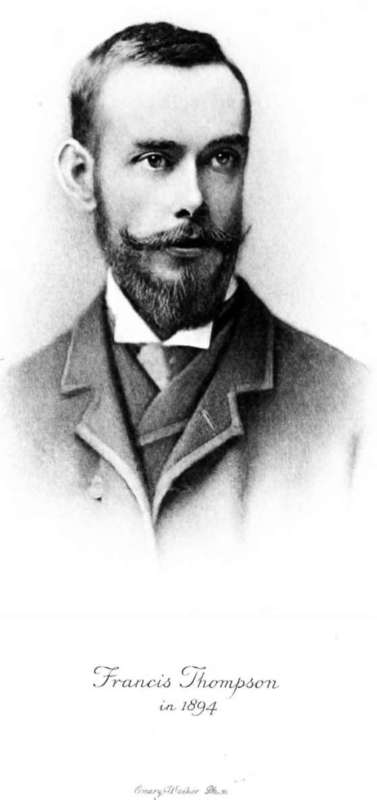

Chapter I. The Child
Description
This section is from the book "The Life Of Francis Thompson", by Everard Meynell. Also available from Amazon: The life of Francis Thompson.
Chapter I. The Child
" I was born in 1858 or 1859 (I never could remember and don't care which) at Preston in Lancashire. Residing there, my mother more than once pointed out to me, as we passed it, the house wherein I was born; and it seemed to me disappointingly like any other house."
The 16th of December 1859 was the day, 7 Winckley Street, a box of a house in a narrow road, the place of Francis Joseph Thompson's birth. He was the second son of Charles Thompson and his wife, Mary Turner Morton.1 Charles Thompson's father (the poet's grandfather) was Robert Thompson, Surveyor of Taxes successively at Oakham in Rutlandshire, Bath, and Salisbury; he married Mary Costall, the daughter of a surgeon, at Oakham in 1812, and died at Tunbridge Wells in 1853. Charles, born in 1823, married Mary Morton in 1857.
Having first practised at Bristol and later been house-surgeon in the Homeopathic Dispensary in Manchester, he set up a practice in Winckley Street shortly after his marriage. Like his wife, his sisters, and the majority of his brothers, Dr. Thompson was a convert to the Catholic Church; but, unlike his brothers, he never committed himself to authorship, and is remembered only in the many good opinions of those who knew him. For his patients he had something of the pastoral feeling ; his rounds were his diocese, and in the statistics of kindness which no man keeps-in deference perhaps to the thoroughness of the Recording Angel-his name is thought worthy to figure largely. Though he attended as many patients as the most successful members of his profession, his fees were smaller and fewer. He stood, like his clients of the poorer quarters, in fear of the Creator firstly, and of death secondly ; and so it happened that, having ministered to mother and child, he would pour out the waters of baptism over infants who made as if to leave the world as soon as they had entered it. This much of his kindness will serve as a preface to the story of the part which, forced to a seeming severity, he played in the career of his son.
1 Their first child, a sen, lived only one day, and of the three daughters whose births followed Francis's, one, Helen, died in infancy. Of the other two, the elder, Mary, is a nun in Manchester, the other, Margaret Richardson, wife and mother in Canada.
The verses of two of Charles Thompson's brothers (Francis's uncles*) supply no clue, not even a plebeian one, to the origin of Francis's muse. Edward Healy Thompson's sonnets and John Costal! Thompson's Vision of Liberty show that nor a dozen such rhyming uncles could endow a birth with poetry. Eugenists must accept an inexplicable hitch in the prosaic unfolding of the Thompson birth-roll. While there can be no chart made of Francis's intellectual lineage, it is not surprising that an occasional phrase in his uncle's Vision of Liberty and other Poems, privately printed in 1848, bears some resemblance to his form and diction.
1 Edward Healy Thompson married Harriet Diana, 'daughter of Nicolson Calvert, sometime M.P. for Hertford, by Frances, co-heir of the ist and last Viscount Pery. Another uncle of the poet was the Rev. Henry Thompson, who was educated at Magdalen Hall, Oxford; took clerical duty at Kirk Hammerton and at Greatham (Hants); published a sermon (1850) entitled The New Birth by Water and the Spirit; married Julia, daughter of Sir William Yea, Bart. A daughter by this union, Charlotte Anne Hechstetter Yea Thompson, married (1869) Ralph Abercrombie Cameron, elder son of the Rev. Alexander Cameron by Charlotte, daughter of the Hon. Edward Rice, D.D., Dean of Gloucester. A fourth uncle of the poet, James Thompson, lost his life in South Africa.
The Writing Uncles
A servant-maid destroyed John's autobiography-an unkind accident, since it left his career to be summed up by a relative in seven words : " An utter failure in life and literature." Gladstone and Sir Henry Taylor at one time interested themselves in his work, but neither so keenly nor so persistently as to secure his good fame with an exacting brother. Yet Edward Healy Thompson (born 1813, educated at Oakham and Emmanuel College, Cambridge) is duller in verse than John Costall. He never saw, or never used, even a second-rate vision. Before his conversion to Catholicism he was curate in the parish of Elia's " Sweet Calne in Wiltshire " from July 1838 to January 1840, and had for neighbour there the friend of Lamb and Wordsworth, to whom Coleridge, before a meeting, had written-
My heart has thanked thee, Bowles, for those soft strains Whose sadness soothes the life with murmuring Of wild bees in the sunny showers of Spring.
But sweet Calne had its harsher properties: its human bees murmured in wrath, and had stings..^ Incumbent and curate both held a poet in disrespect. (Coleridge and Francis Thompson, in whom may be traced in common the spoliations of opium, are linked by the coincidence that they were condemned by those Wiltshire associates -Coleridge by the rector in terms of high contempt, and Francis by the curate, who wrote in later days to warn Francis's London friends that he must be avoided as the writer of "erotic verse." jEdward Healy Thompson afterwards admitted Francis's genius, but found no hereditary explanation .of it in Francis's parents or any member of the family. \ On the other hand, Miss Agnes Martin, a cousin of Francis, writes : " From his father he inherited his passion for religion, and, from what I know of his poetry, I find he has expressed thoughts and yearnings habitual to other members of his father's family." It was Francis's custom to speak of his mother as if it were from her at least as much as from his father that he derived certain mental and physical characteristics. Born in Manchester in 1822, she was daughter of Joseph Morton and Harriet Sigley. Her father, a clerk in the bank of Messrs. Jones, Lloyd and Co., was afterwards secretary to the newly-founded Manchester Assurance Co., and later lost money in a personal business enterprise. In 1851 her family left Manchester for Chelsea, and there in 1854 she was living with people who befriended her desire, frowned upon by her family, of becoming a Catholic. She became engaged to the son of the house, but he died, and before the close of the year she was received into the Church. In how far she was cast out by her own people I do not know, but to some degree she rehearsed the part to be played, after her death, in her own household by her own son. She set out to make a living, and took a position as governess at Sale, near Manchester, having failed-as he failed in his Ushaw days-in an attempt to enter the Religious Life.1 In the following year, while still in the neighbourhood of Manchester, she met her future husband. She died December 19, 1880, at Stamford Street, Ashton-under-Lyne. Dr. Thompson married as his second wife Anne Richardson, in 1887.
Continue to: